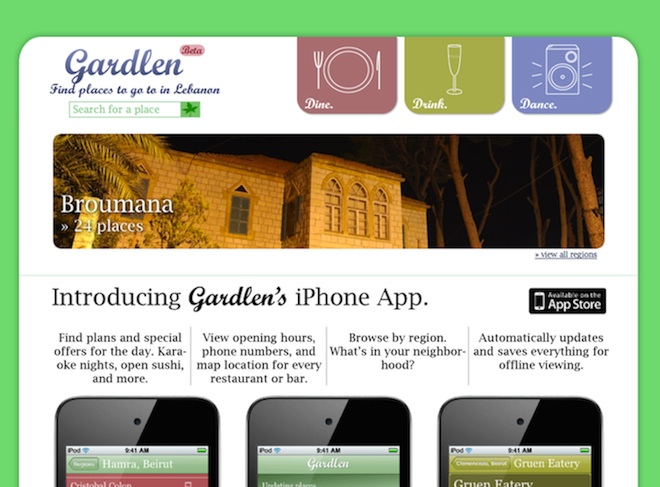
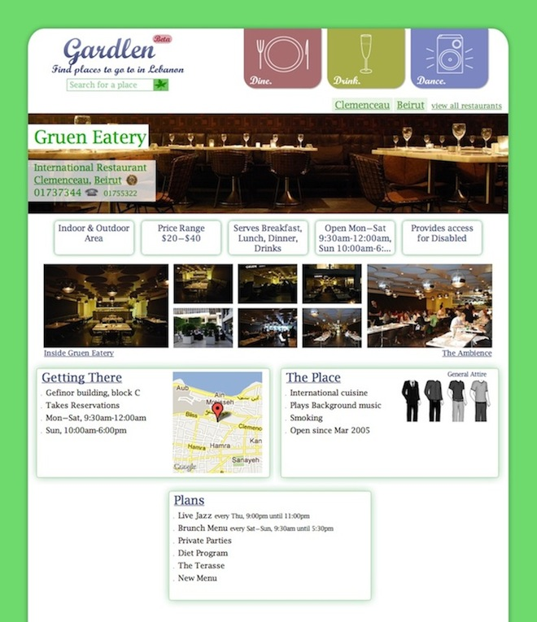
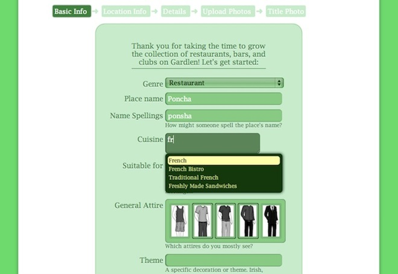
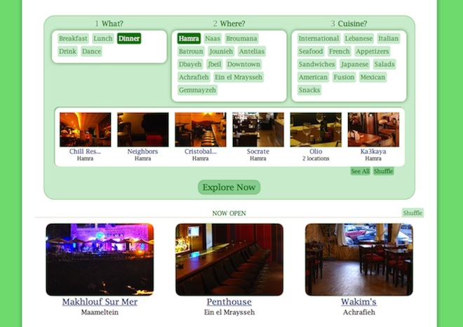
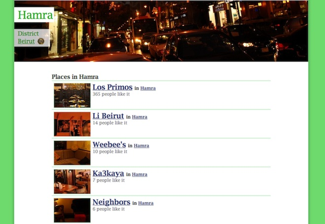
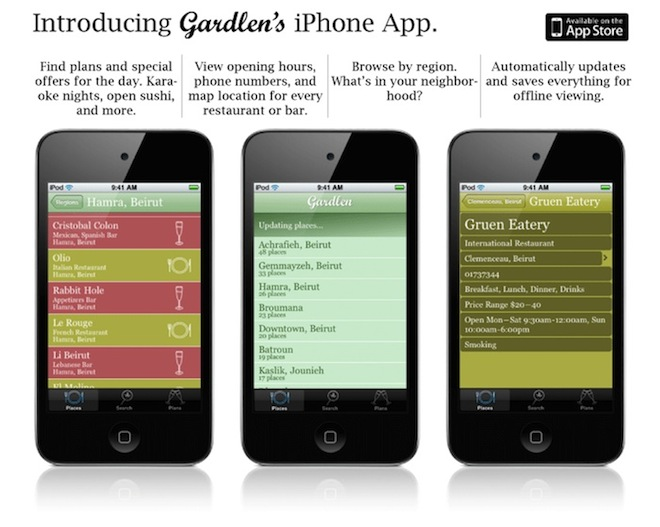

Gardlen Website & iPhone App
Gardlen.com is an individual project. I designed, implemented, collected data, and took pictures, all myself. This project was made for the sole reason of having fun! Gardlen's Facebook page is at 13,000 fans and counting. Visitors spend an average of 6 minutes on the website.
Users access useful information quickly, and can scroll for further details. Pictures are strategically implemented in the website. Places in Gardlen link to their Facebook pages using its Graph.
Place owners can connect with their Facebook accounts and add a new place. Here, Gardlen simplifies complicated details with intuitive, simple forms.
I implemented Gardlen using Ruby on Rails and MySQL. The website runs on a virtual server with modest specs. Database and traffic growth slowed the load time so I added caching functionality using memcached. Average load time improved to 100-200ms. The below form is used to explore places. The form is based on AJAX and CSS3.
I interviewed managers and took pictures for every place listed on Gardlen. There were many challenges: I introduced my website in a short and concise manner to 150 establishments in two months.
One year after launching Gardlen, I designed and developed an iPhone app. The app updates with the website when online, and saves the data for offline use. I'm proud of my product!
